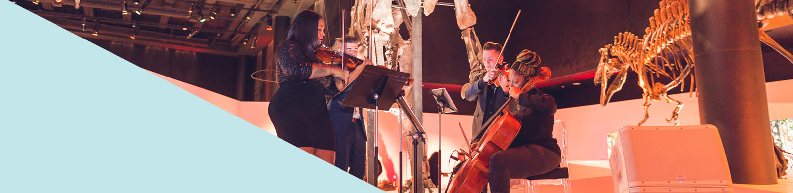

同质音色,无处藏拙
没有管乐的色彩、没有钢琴的和声填充,任何一处空洞都会暴露在四条旋律线里。
弦乐四重奏,与一首格莱美金曲
室内乐选题 · Web Presentation
Die with a Smile — Lady Gaga & Bruno Mars
弦乐四重奏 · String Quartet

弦乐四重奏是室内乐最经典的形式。四件同族乐器,没有指挥,没有钢琴救场。 四个声部如同四人交谈,谁也不能缺席,谁也盖不住谁。
作曲家的视角
没有管乐的色彩、没有钢琴的和声填充,任何一处空洞都会暴露在四条旋律线里。
每条旋律同时在独奏和伴奏,对位法被逼到极限。
没有指挥,作曲家写下的是一场对话,排练时的每一次皱眉都要提前在谱面上解决。
“四位理性之人的交谈。” 歌德论弦乐四重奏
DIVISI Strings · 休斯顿
2006 年,四位在休斯顿大学攻读音乐演奏的朋友组成了 Divisi String Quartet。 他们从婚礼与庆典出发,如今已是六十余位音乐家的演出集体, 成员多出自茱莉亚、皮博迪等音乐学院,也活跃在休斯顿交响乐团与休斯顿大歌剧院。
创始人 · 主理人
小提琴
创始成员
创始成员
Amp’d String Quartet 是休斯顿最早的流行四重奏,把古典技法带进流行曲目。
现场演奏
原唱 Lady Gaga & Bruno Mars / 演奏 The Amp’d String Quartet
2024 年 8 月发行 · Billboard Hot 100 四周冠军 · 2025 年度单曲
“室内乐的精神,从来不在音乐厅的围墙之内。”